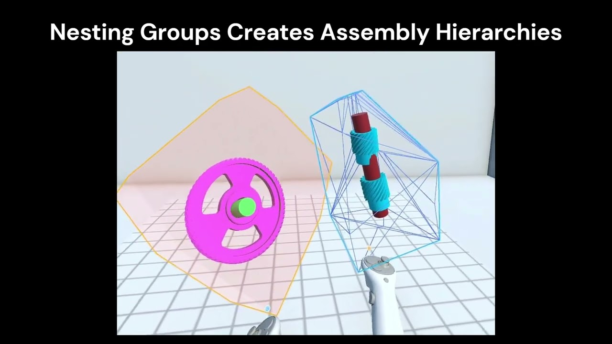

IEEE VR 2026 Workshops · Poster · 2026
Bimanual XR Specification of Relative and Absolute Assembly Hierarchies for Teleoperation

Abstract
We present a bimanual XR interaction approach for specifying remote assembly tasks as hierarchies of relative and absolute object constraints that specify high-level teleoperation goals for robots. Grabbing one object in each hand creates a constraint group (visualized as a hull) and groups can be nested into hierarchies. Each group can be relative (with a robot-specifiable 6DoF pose) or absolute (with an author-specified fixed 6DoF pose) in relation to its parent. A relative group specifies a subassembly that can be constructed at a location chosen by the robot software for efficiency rather than mandated by the user.
BibTeX
@inproceedings{yang2026bimanual,
title={Bimanual XR Specification of Relative and Absolute Assembly Hierarchies for Teleoperation},
author={Yang, Ben and He, Xichen and Zou, Charlie and Liu, Jen-Shuo and Tversky, Barbara and Feiner, Steven},
booktitle={2026 IEEE Conference on Virtual Reality and 3D User Interfaces Abstracts and Workshops (VRW)},
year={2026},
doi={10.1109/VRW70859.2026.00191}
}